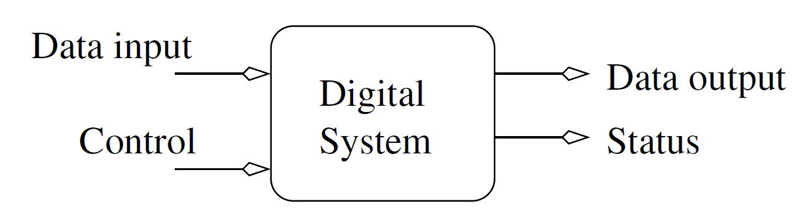
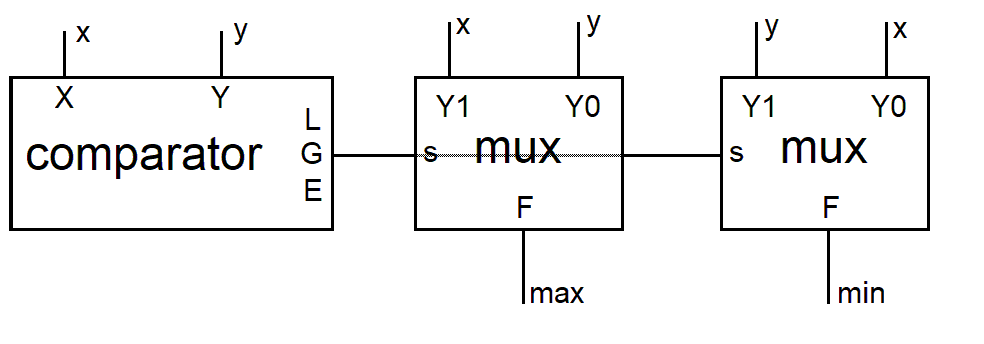
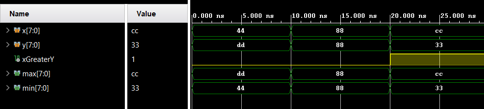

Basic Building Blocks
While digital design has AND/OR/NOT gates at its foundation, in practice, we
rarely use individual gates to design practical systems. Rather you will
use pre-configured units of gates as the building blocks for your designs.
Hence, we will call these pre-configured units, basic building blocks. All
our basic building blocks will have the general structured shown below.

The relationship between the signals in a basic building block is given as
follows:
A basic building block transforms the data input
into data output. The transformation performed
is specified by the control input. The status
output indicates if any exceptional events occurred
during this transformation.
You can find a list of the most common building blocks in Table 8.1
on page 181 of my textbook linked on the front page. The password
for this pdf is spr20Digital. If you are foggy how these building
blocks work, it's reviewing the combinational building blocks
in chapter 4.
In order to better understand how
we might use these building blocks, it's worthwhile to look closely
at one of the building blocks the generic 2:1 multiplexer.
Generic 2:1 Multiplexer
A multiplexer is a data routing device which sends one of the two
inputs to the output depending on the value of the 1-bit select
signal. The following table provides the specific names and
widths of the signal used in our multiplexer.
| Data input | 2 N-bit vectors y1 and y0
|
| Data output | N-bit vector f
|
| Control input | 1-bit select
|
| Status output | None
|
| Behavior | f = y1 when select = 1, else f = y0
|
If you haven't already noticed, we are not providing a specific width
the data input and output vectors. Rather, we will allow the
person who uses the multiplexer, you, to specify the width of the
data input and output when they use the mux. This is why we call
this a "generic" mux. Let's see how this name comes about.
Look closely at the VHDL definition of the entity and
architecture of the generic 2:1 multiplexer.
entity genericMux2x1 is
generic(N: integer := 4);
port(y1,y0: in std_logic_vector(N-1 downto 0);
select: in std_logic;
f: out std_logic_vector(N-1 downto 0) );
end genericMux2x1;
architecture behavior of genericMux2x1 is
begin
f <= y1 when s='1' else y0;
end behavior;
The entity contains the declaration
generic(N: integer := 4). Let's
unpack this statement.
- generic means that there is a parameter that will
be used in the entity and architecture.
- N is the name of this parameter. You may now use "N" in the
entity and architecture definitions. Where ever you use
"N" it will be replace by the value you give it when you
use a genericMux2x1
- integer means that the only valid values for the parameter N
are integers.
- :=4 means that if you do not provide a value for the parameter
N, it will have a default value of 4.
Note that the data inputs and outputs are defined as
std_logic_vector(N-1 downto 0), the "N" in "N-1" is the value you
will provide when you use the multiplexer. Since we are indexing the
bits from 0, then the index of the N
th bit is N-1. The rest
of the generic 2:1 multiplexer definition is pretty unremarkable.
Let's turn to the elephant in the room, how do you "use" the
genericMux2x1? Great question!
Component Instantiation
I've been gritting my teeth while I wrote the previous paragraphs
because every time that I used the expression "use a multiplexer"
what I really wanted to say was "instantiate a multiplexer".
I refrained because I wanted to fully cover the concept of generics before
diving into instantation.
When you instantiate a component in VHDL, you create a physical copy of
the component that is placed on the FPGA that operates concurrent
with all the other hardware in your design. You can make multiple
instances of the same component, each is a unique, individual, and
separate from the other instances.
The ability to instantiate components leads naturally to the idea of
hierarchical design - the ability to include a component inside components
inside components, etc... This ability to nest components allows us to
hide unnecessary details inside a component and only show the "high level"
behavior externally. In other words, hierarchical design allows you to
abstract away the details of a design.
So let's try instantiating some components.
Min/Max Circuit
Let's flex our ability to describe digital designs using the
basic building blocks template.
| Data input | 2 N-bit vectors x and y
|
| Data output | 2 N-bit vectors min and max
|
| Control input | None
|
| Status output | None
|
| Behavior | min equals the smaller of x and y.
max equals the larger of x and y
|
I've chosen to implement this circuit using the arrangement of
building blocks shown below. Note the G output from the comparator
goes to the s input of the left and right mux. This is the reason
for the gray line through the left mux - the signal is going
"under" the left mux.

The role of the comparator in this
design is to assert a logic 1 on its greater than output, G, when
the x input is greater than y. When G equals 1, the left 2:1
mux will output x onto the max output and the right 2:1 mux will
output y on the min output. I hope that this is a straight forward
analysis.
Let's look at the VHDL code for the minMax circuit that will
instantiate a comparator and two multiplexers.
----------------------------------------------------------------------------------
-- Comments start with two dashes
-- You should always have the following
-- lines in all of your code
----------------------------------------------------------------------------------
-- Name: Prof Chris Coulston
-- Date: Fall 2022
-- Course: EENG 498
-- File: mod10Counter
-- Purp: Classic mod 10 counter from EENg 294 Lab #8
--
-- Doc:
--
--
-- Academic Integrity Statement: I certify that, while others may have
-- assisted me in brain storming, debugging and validating this program,
-- the program itself is my own work. I understand that submitting code
-- which is the work of other individuals is a violation of the honor
-- code. I also understand that if I knowingly give my original work to
-- another individual is also a violation of the honor code.
----------------------------------------------------------------------------------
library IEEE;
use IEEE.STD_LOGIC_1164.ALL;
use work.basicBuildingBlocks_package.ALL;
entity minMax is
port ( x, y : in STD_LOGIC_VECTOR(7 downto 0);
min, max : out STD_LOGIC_VECTOR (7 downto 0));
end minMax;
architecture structure of minMax is
signal xGreaterY : STD_LOGIC;
begin
comp_inst : genericCompare
GENERIC MAP(8)
PORT MAP(x => x, y => y, g => xGreaterY, l => open, e => open);
max_mux: genericMux2x1
GENERIC MAP(8)
PORT MAP(y1 => x, y0 => y, s => xGreaterY, f => max);
min_mux: genericMux2x1
GENERIC MAP(8)
PORT MAP(y1 => y, y0 => x, s => xGreaterY, f => min);
end structure;
Let's look at close look at the first multiplex instantation, the
one that starts with max_mux.
- max_mux is the name of the instance. You should give
each instance a unique name that will help you locate
the instance when you are running your simulations - more
on this later.
- genericMux2x1 is the name of entity/architecture that
is being instantiated.
- GENERIC MAP(8) assigns the generic parameter N the
value of 8. We know from previous discussion that this
is the width of the input and output vectors. So all
inputs and outputs to/from the multiplexer will be
8-bit signals. Checking the minMax entity, you can
verify that x, y, max and min are 8-bit signals.
- PORT MAP tells the compiler that you are going to
be assigning the signal in the genericMux2x1 entity
values.
- y1 => x assigns the signal y1, that is in the
genericMux2x1 entity, the calue of x, a signal that
exists in the minMax architecture. We go on to assign
every signal in the genericMux2x1 entity a value from
signals whose scope is inside the minMax architecture.
There are a couple of other important points that you may have
overlooked:
- open The comparator has two unused signals, L and E.
We assign these
unused outputs the special value "open" to denote that these
outputs are no connected to anything, they are open-circuit.
Only outputs can have the value of open. NEVER give an input
the value of open.
- use work.basicBuildingBlocks_package.ALL; is a
library file that I created. It contains prototype for all the
basic building blocks.
Verification
How should we go about showing that the VHDL code given above
actually performs the correct min and max operations? Well,
we will need a testbench, a topic that we will dive into during
our next lecture. In preparation for that lecture, I created
a testbench for he minMax circuit and generated the following
timing diagram. Look it over and see if our design correctly
performs the min max function.
